地政学
シュトゥットガルトは南西ドイツの州都として、連邦制の地域権力、欧州産業網、米軍関連施設、スイスやフランスへ近い交通を結びます。首都ではない街が、製造業と安全保障を通じて国際秩序に触れる都市圏です。
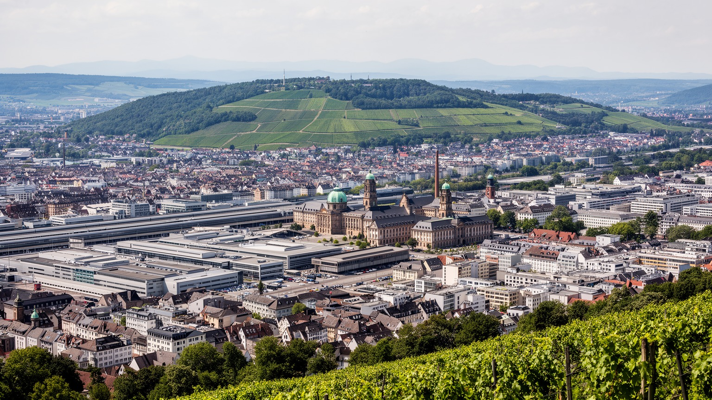
🇩🇪 ドイツ / ヨーロッパ / World City Atlas
バーデン＝ヴュルテンベルク州都として、自動車産業、機械工業、研究開発、出版、移民労働、丘陵の住宅地、葡萄畑が近い距離で重なる南西ドイツの実務都市です。
都市の骨格
シュトゥットガルトは自動車の象徴で語られがちですが、実際には州政府、研究機関、出版、移民コミュニティ、葡萄畑、鉄道工事、住宅市場が重なります。丘陵地形は景観の美しさと移動の難しさを同時に作ります。
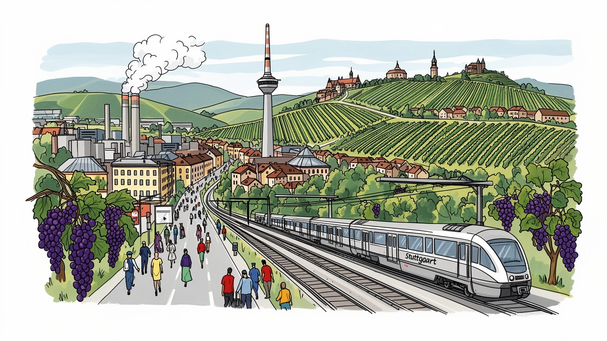
シュトゥットガルトは南西ドイツの州都として、連邦制の地域権力、欧州産業網、米軍関連施設、スイスやフランスへ近い交通を結びます。首都ではない街が、製造業と安全保障を通じて国際秩序に触れる都市圏です。
自動車、機械、電子、研究開発、出版、見本市、サービスが雇用を作ります。高技能の技術職が目立つ一方、工場、物流、清掃、介護、飲食、建設で働く移民労働も都市の生産力と生活を支えています。技能継承も重要です。
州立劇場、博物館、教会、モスク、移民の商店街、葡萄畑の祭りが文化を形作ります。工業都市の硬い印象の下で、宗教、方言、食、音楽、出版、サッカーが地域の帰属を静かに編んでいます。礼拝も街に根づきます。
宮殿広場、車の博物館、丘の眺望、温泉、葡萄畑は旅の魅力です。住民には家賃、坂道、交通工事、大気、保育、通勤が切実で、観光の景色と生活の不便が同じ盆地で交差します。日常の足場も見えます、街の旅です。
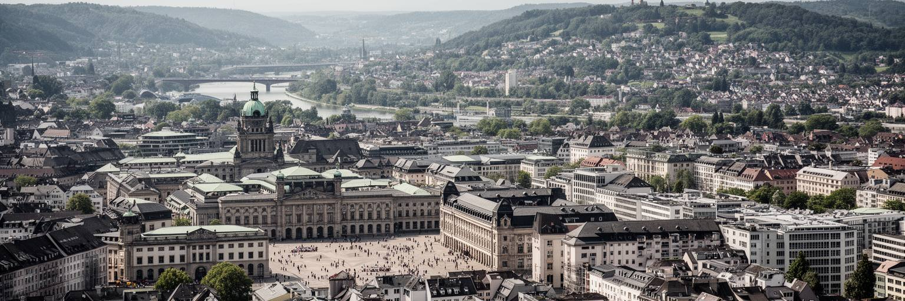
シュトゥットガルトは、ネッカー川へ向かう谷と丘陵に囲まれた盆地の州都です。平らな大都市とは違い、中心部、駅、宮殿広場、商業地、住宅地、葡萄畑、森が高低差を持って重なります。この地形は眺望と緑の近さを生む一方、道路の混雑、空気の滞留、住宅地の分断、公共交通の設計を難しくします。州政府、議会、行政機関、裁判所、文化施設が集まるため、街はバーデン＝ヴュルテンベルク州の政策を住民の生活へ運ぶ窓口でもあります。教育、産業支援、移民統合、住宅、交通、気候対策は、連邦政府だけでなく州都の制度を通して進みます。観光客が宮殿広場の整った景観を見る時、その背後では州財政、企業団体、労働組合、大学、地域自治体が利害を調整しています。シュトゥットガルトの都市性は、首都のような儀礼ではなく、地域産業を支える実務にあります。丘の上から見える中心部はコンパクトですが、都市圏の通勤と政治の影響は広いです。州内の農村や中小都市から通う人、行政サービスを受けに来る人、文化施設を利用する人も多く、中心部は人口規模以上の負荷を受けます。盆地の州都を理解するには、壮麗な広場だけでなく、坂道のバス、郊外の駅、県境を越える商談、州政府の窓口まで見渡す必要があります。地形と制度が重なるため、政策の成果は通勤時間や空気の質にも現れます。
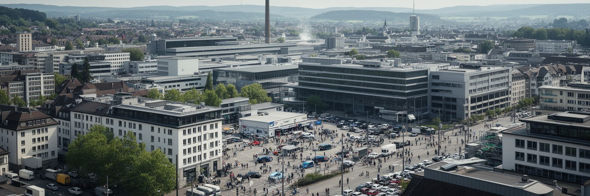
シュトゥットガルトは自動車の都市として世界に知られています。完成車メーカー、部品企業、設計事務所、工作機械、ソフトウェア、試験設備、販売、整備、広告、金融が都市圏の雇用を厚くし、地域の所得を押し上げてきました。しかし電動化、電池、半導体、ソフトウェア、排出規制、国際市場の変化は、エンジンを中心に築かれた技能と雇用を揺さぶっています。自動車産業は本社ビルや博物館だけではなく、工場の交代勤務、職業訓練校、下請け企業、物流倉庫、研究所、労使交渉で成り立ちます。高技能の技術者は都市の競争力を支えますが、転換の痛みは中小企業や現場労働に強く出ることがあります。環境政策は必要ですが、雇用の移行が遅れれば社会的な不安も広がります。シュトゥットガルトを読むには、車を誇る文化と車に依存しすぎるリスクを同時に見る必要があります。次の産業都市であり続けるには、製造の知識を移動、エネルギー、デジタル技術へどう移すかが問われます。労働者にとって重要なのは、過去の技能が古くなることではなく、新しい技能へ移る時間と訓練、賃金の保障があるかです。部品点数が変われば地域の仕事の配分も変わり、家庭の将来設計にも影響します。車の街の未来は、展示室よりも職場と学校の接続に現れます。サプライヤーの工場や整備現場まで含めると、転換は都市圏全体の生活問題です。
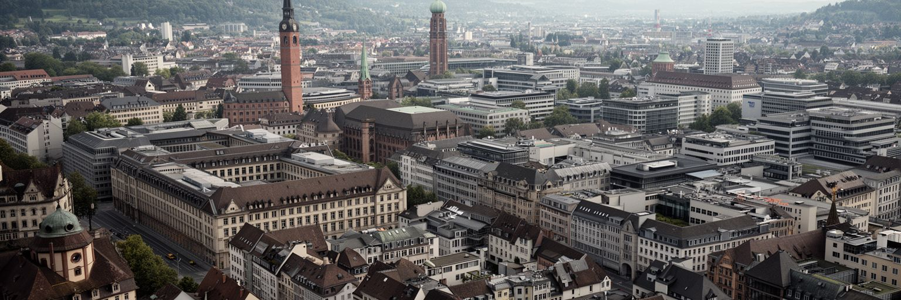
シュトゥットガルトの強さは巨大企業だけではありません。大学、応用研究機関、工科系の教育、職業訓練、精密な中小企業が密につながり、製造業の裾野を支えています。新しい車両制御、ロボット、材料、環境技術、建築、出版、デザイン、情報工学は、研究室と工場の往復の中で育ちます。南西ドイツの産業文化では、手を動かす技能と理論を結びつける教育が重視され、若い人が企業で学びながら資格を取る道も厚いです。一方で、研究開発の国際競争は人材の取り合いを激しくし、留学生や外国人研究者には住宅、ビザ、言語、家族の生活が課題になります。中小企業は地域に根を張りますが、エネルギー価格、資金調達、後継者不足、デジタル投資の負担にも直面します。知識都市としての価値は、特許数や研究費だけでは測れません。実験装置を管理する技術職、試作品を作る職人、図面を読む訓練生、通訳や保育を支える制度まで含めて、都市の革新力が作られます。大学の研究が地域企業へ届くには、共同研究の契約、実習の受け皿、交通、住宅、子育て支援が必要です。研究者が短期で去り、若い技術者が家賃で疲弊すれば、知識は都市に残りにくくなります。革新は発明の瞬間だけでなく、生活できる環境に支えられています。小さな工房と研究室が近いことは、発想を実物へ変える速度を高めます。
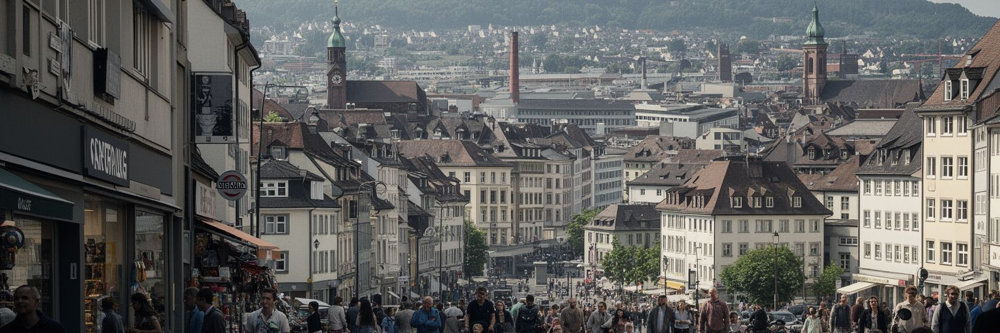
シュトゥットガルトは多くの移民によって支えられてきた都市です。戦後のゲストワーカー、トルコや南欧、旧ユーゴスラビア地域、東欧、中東、アジア、アフリカから来た人びと、近年の難民や留学生が、工場、建設、清掃、介護、飲食、物流、病院、大学、ITで働いています。中央駅周辺や各地区には多言語の商店、礼拝所、食堂、送金サービス、学習支援の場があり、国際性は企業の英語会議だけでなく生活の足元にあります。移民の存在は食文化や祭りとして歓迎されやすい一方、資格認定、差別、学校での言語支援、住宅探し、在留手続き、宗教施設への視線は日々の緊張になります。自動車都市の豊かさを語るなら、組立ライン、厨房、夜勤、配達、介護施設で働く人の条件も見なければなりません。第二世代の若者が職業訓練や大学へ進み、自分の街として政治に参加できるかは、都市の開かれ方を測る指標です。多様性は標語ではなく、役所、学校、職場、近所の会話で毎日確かめられます。家庭では複数の言語が使われ、学校では進路選択が階層や言語支援に左右されます。礼拝所や商店は相談と相互扶助の場にもなり、都市の見えにくい福祉を補います。移民を労働力としてだけ扱わず、市民として制度に迎える力が、産業都市の安定を決めます。多文化の店や祭りを楽しむだけでなく、住まいと教育の壁を見ることが必要です。
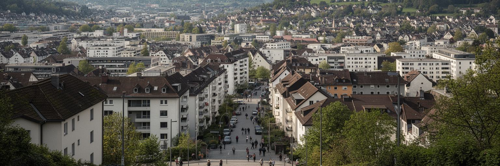
シュトゥットガルトの生活で大きな負担になるのは住宅です。高い雇用機会、企業の集積、大学、治安の良さ、緑の近さは都市の魅力を高めますが、その魅力は家賃と住宅価格を押し上げます。盆地と丘陵の地形は開発できる土地を限り、眺めの良い住宅地と交通の便利な中心部には強い需要が集まります。学生、若い家族、単身高齢者、移民労働者、低賃金のサービス職にとって、手頃で職場に近い住まいを見つけることは簡単ではありません。坂道の多い街では、駅や店、保育園、学校、病院への距離だけでなく、高低差も生活の負担になります。住宅問題は個人の節約では解けず、公共住宅、賃貸規制、再開発、郊外鉄道、土地利用、緑地保全を一緒に考える必要があります。産業都市の成功が、都市を支える労働者を遠くへ押し出すなら、その成功は脆くなります。シュトゥットガルトの豊かさは、高級住宅地ではなく普通の仕事をする人が近くで暮らせるかによって試されます。通勤が長くなれば、保育の迎え、夜勤後の休息、地域活動への参加も難しくなります。住宅を増やすだけでなく、学校、診療所、店、緑地をそろえることが必要です。坂道の都市では、生活の近さと移動のしやすさが公平性を左右します。階段や急坂は高齢者や子ども連れには大きな壁になり、住む地区の選択肢を狭めます。住宅は都市参加の基盤です。
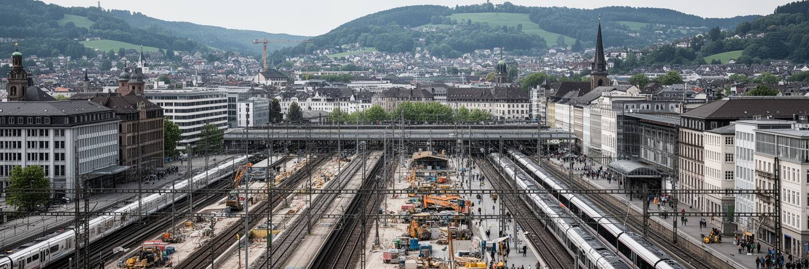
シュトゥットガルトの交通を語る時、中央駅と鉄道計画は避けられません。盆地の中心にある駅は、Sバーン、地域鉄道、長距離列車、トラム、バスを結び、通勤、通学、買い物、観光を受け止めます。長年議論されてきた駅再編と地下化の計画は、単なる土木工事ではなく、財政、景観、樹木、地下水、遅延、民主的な合意をめぐる都市政治になりました。工事は利用者の動線を変え、周辺の商店や住民にも影響を及ぼします。交通網が強くなれば、郊外の住宅地と中心の雇用を結びやすくなりますが、乗り換えの不便や工事の長期化は毎日の疲れを増やします。丘陵の街では自動車依存を減らすためにも、公共交通、自転車、歩行者空間、バリアフリーの改善が重要です。駅は移動の施設であると同時に、社会問題、商業、警備、観光、ホームレス支援が交わる公共空間です。シュトゥットガルトの未来は、速い列車だけではなく、毎日の移動が公平で分かりやすいかにかかっています。大規模工事は都市の信頼を試します。説明が不足すれば、便利さへの期待よりも負担への不満が強まります。通勤者、障害のある人、子ども連れ、夜勤の労働者、旅行者が同じ駅を使うため、仮設通路や案内表示の質も公共性の一部になります。駅の使いやすさは、都市が誰の時間を大切にするかを示します。遅れや遠回りは生活時間を削ります。
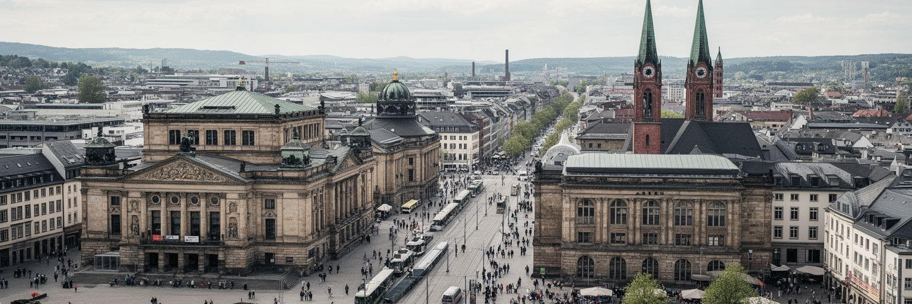
シュトゥットガルトには、州立劇場、バレエ、オペラ、美術館、図書館、出版、音楽教育が集まり、工業都市という硬い印象を和らげる文化の厚みがあります。宮殿広場の周辺では王国時代の都市計画、戦災後の再建、現代建築が重なり、散歩の景色そのものが歴史の層を見せます。同時に、二十世紀の政治暴力、戦争、迫害、強制労働、移民の記憶をどう語るかも重要です。自動車や機械の成功は、戦時動員や戦後復興の歴史から切り離せません。記念碑、博物館展示、学校教育、通りの名前、企業史の説明は、都市が過去への責任をどう扱うかを示します。文化施設は観光のためだけでなく、市民が複雑な歴史を共有し、議論する場所でもあります。移民の宗教施設や地区の祭りも、都市文化を現在進行形で更新しています。シュトゥットガルトを読むには、劇場の舞台と工場の記憶、教会の鐘とモスクの集い、王都の景観と現代の移民都市を同じ地図に置く必要があります。文化の公共性は、チケットを買える人だけでなく、子ども、移民、高齢者、学生が参加できるかで決まります。図書館や地区の文化センターは、言語学習、読書、相談、静かな居場所にもなります。記憶と文化が開かれているほど、工業都市は単なる生産の場所を超えていきます。舞台芸術と地区文化がつながる時、都市の歴史は日常の会話へ戻ります。
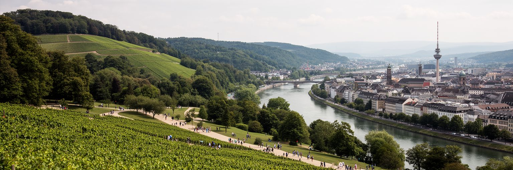
シュトゥットガルトの魅力は、工場や駅だけでなく、丘の葡萄畑、森、公園、ネッカー川沿いの散歩道にあります。都市の中心から短い距離で斜面の畑や展望地へ出られることは、生活の質を大きく高めます。葡萄畑は観光の絵になる風景であると同時に、土地利用、農業、季節労働、地域の祭り、気候変動を考える場所です。緑地は暑さを和らげ、雨水を受け止め、子どもや高齢者が無料で過ごせる公共空間になります。盆地の街では空気の流れが重要で、緑の斜面や通風の道を壊す開発は生活環境に響きます。一方で住宅不足が強いほど、緑地を守ることと住まいを増やすことは衝突します。葡萄畑を楽しむ余暇の背後には、農作業、観光客の混雑、道路の管理、ごみ、自然保護の問題もあります。シュトゥットガルトの緑は都市の飾りではなく、健康、気候適応、地域の記憶を支える基盤です。工業の速度と丘の季節を同時に持つことが、この街の独特な時間を作っています。熱波が強まるほど、木陰、水辺、風の通り道は福祉の一部になります。緑の近くに住める人だけが涼しさを得るのではなく、学校、駅前、集合住宅の周りにも休める場所が必要です。葡萄畑と森は美しい背景ではなく、都市が息をするための装置です。季節の作業や祭りは、住民に土地の変化を感じさせる身近な暦にもなります。緑の維持にも労働があります。
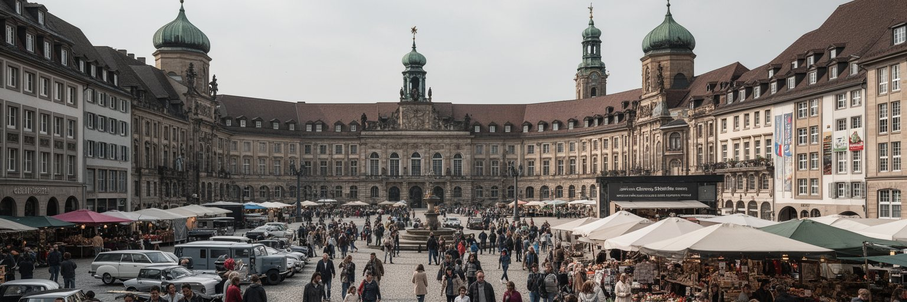
旅行者にとってシュトゥットガルトは、宮殿広場、州立美術館、メルセデス・ベンツ博物館、ポルシェ博物館、温泉、ワインの丘、クリスマスマーケットを巡る都市です。車の歴史を見に来る人、文化施設を訪れる人、近郊の黒い森やシュヴァーベン地方へ向かう人が、中心部や駅に集まります。しかし観光の動線は、住民の日常と完全には分かれていません。市場で買い物をする人、学校へ向かう子ども、工事中の駅を通る通勤者、飲食店で働く人、夜の清掃を担う人が、同じ広場や地下道を使います。観光収入はホテル、交通、飲食、文化施設を支えますが、混雑や価格上昇、短期滞在者向けの消費が日常の店を押し出すこともあります。シュトゥットガルトの旅は、車の殿堂だけで終わらせると浅くなります。丘を上り、移民の商店街を歩き、駅工事の囲いを見て、住宅地の坂道を感じる時、産業都市の現実が見えてきます。名所は都市の入口ですが、日常の動線こそ街の理解を深めます。観光客が短い時間で見る景色は、住民が何年も使う通学路や買い物の場所でもあります。街を丁寧に歩くほど、展示された自動車の輝きと、駅前の混雑、住宅地の静けさ、葡萄畑の季節が一つの生活圏としてつながります。消費する名所と暮らす場所の距離が近いからこそ、旅にも配慮が求められます。観光は生活の背景を読む入口です。
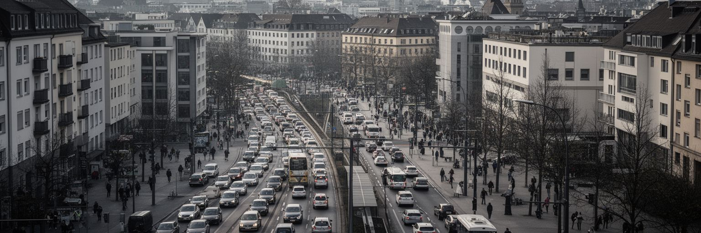
シュトゥットガルトは豊かな産業都市ですが、その豊かさは社会問題を消すわけではありません。住宅費、所得差、移民の包摂、老朽インフラ、交通渋滞、大気汚染、工事の長期化、気候変動への備えは、住民の生活を具体的に左右します。盆地の地形は空気の滞留を起こしやすく、車の多い都市では環境政策が暮らしの質に直結します。公共交通や自転車道を広げることは必要ですが、車で通勤せざるを得ない人や郊外の労働者に負担を押しつけない設計も求められます。高技能職とサービス職の所得差が広がると、同じ都市で働く人が同じ都市に住めなくなります。社会支援の現場では、ホームレス、依存症、孤立する高齢者、言語の壁を抱える世帯への対応も続きます。豊かな街ほど、問題が景観の裏に隠れやすいです。シュトゥットガルトを成熟した都市として見るには、企業の成功だけでなく、空気、住まい、移動、福祉、教育がどの地区にどう配られているかを見る必要があります。公平さは都市の競争力を支える条件です。環境規制や交通制限が進む時も、負担を誰が引き受けるのかを丁寧に考えなければなりません。子どもが安全に歩ける道、高齢者が涼める場所、移民が相談できる窓口、労働者が住める家は、産業政策と同じくらい都市の基礎です。社会問題を早く見つけて支える仕組みが、豊かな都市の信頼を守ります。
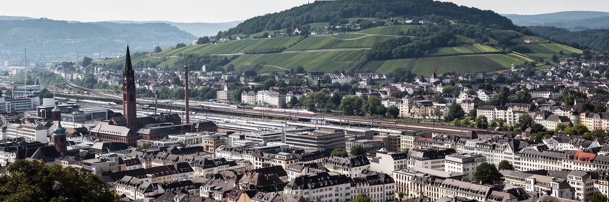
シュトゥットガルトを読むことは、自動車のブランド都市という印象を、州都の制度、丘陵地形、移民労働、住宅、交通、文化、環境と重ねることです。宮殿広場と車の博物館は確かに強い入口ですが、その背後には電動化に揺れる産業、研究開発を支える教育、坂道の住宅地、駅工事への賛否、葡萄畑の保全、移民世帯の生活があります。都市の規模は巨大ではありませんが、南西ドイツの製造業を束ねる役割は大きく、欧州の産業転換にも関わっています。成功した工業都市ほど、雇用の質、家賃、交通、空気、気候対策を同時に扱わなければなりません。旅行者には落ち着いた州都に見えても、住民には通勤、保育、住宅探し、工事、言語、坂道、暑さが毎日続きます。シュトゥットガルトの価値は、車の過去を保存することだけではなく、製造の知識を未来の生活へ変える力にあります。丘の上から中心部を見下ろすと、工場、劇場、駅、住宅、葡萄畑が近くに重なり、都市の豊かさと負担が同時に見えてきます。世界都市としての意味は人口規模より、産業転換の影響が広い地域へ波及する点にあります。ここで働き、学び、移動し、住む人の条件を重ねて見ると、欧州の工業都市が次の時代へ進む難しさと可能性がはっきりします。小さく見える坂道や駅の工事にも、都市の未来を決める選択が現れています。